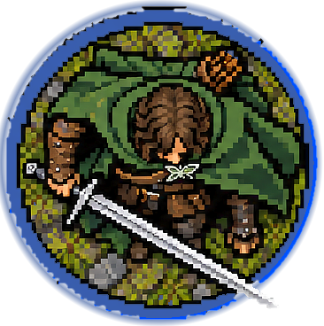
aragorn
아라곤
gondor · hero · sword · L
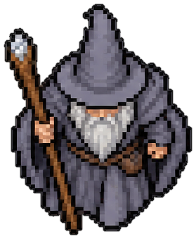
gandalf
간달프
maiar · hero · staff · L
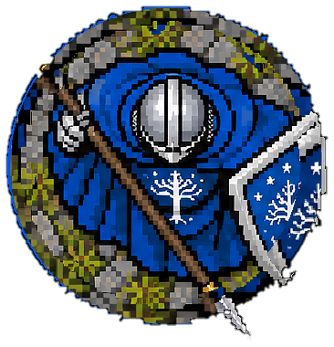
warrior_minas_tirith
미나스 티리스 전사
gondor · infantry · sword_shield · M
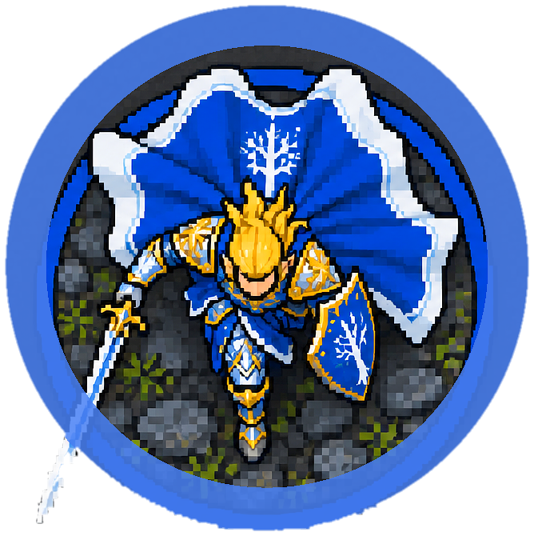
glorfindel_foot
글로르핀델(도보)
rivendell · hero · sword · L
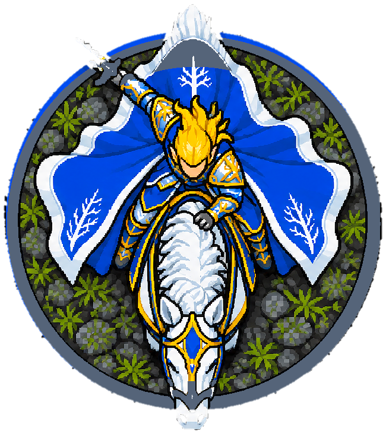
glorfindel_mounted
글로르핀델(기마)
rivendell · cavalry · sword · XL
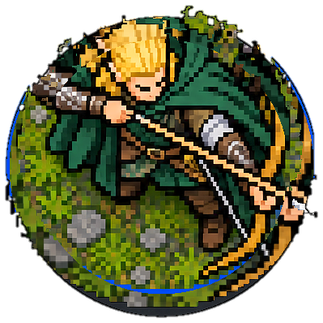
legolas
레골라스
elf · hero · bow · M
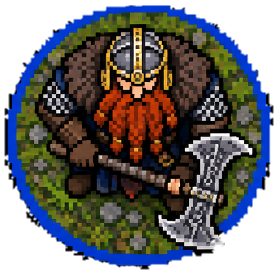
gimli
김리
dwarf · hero · axe · M
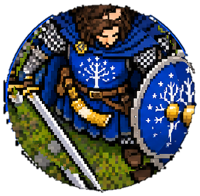
boromir
보로미르
gondor · hero · sword_shield · L
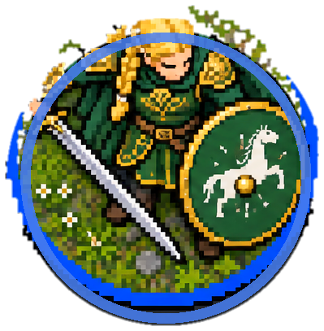
eowyn
에오윈
rohan · hero · sword · M
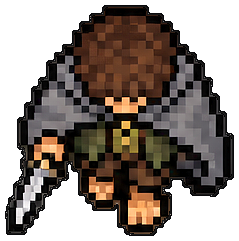
frodo
프로도
shire · hero · dagger · S
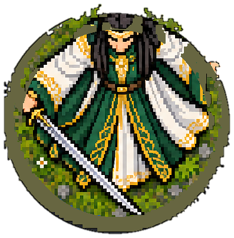
elrond
엘론드
rivendell · hero · sword · L
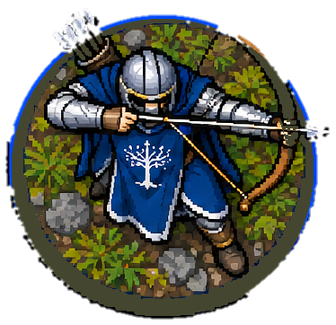
gondor_archer
곤도르 궁수
gondor · infantry · bow · M
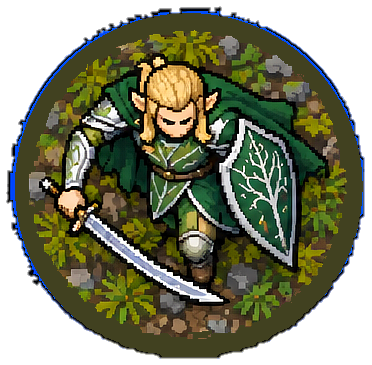
elf_swordsman
엘프 검사
elf · infantry · sword · M
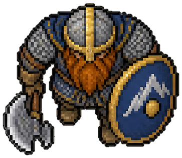
dwarf_guardian
드워프 가디언
dwarf · infantry · axe · M
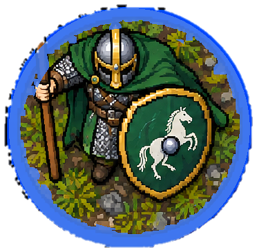
rohan_royal_guard
로한 근위병
rohan · infantry · spear_shield · M
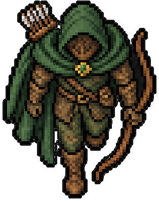
ithilien_ranger
이틸리엔 레인저
gondor · infantry · bow · M
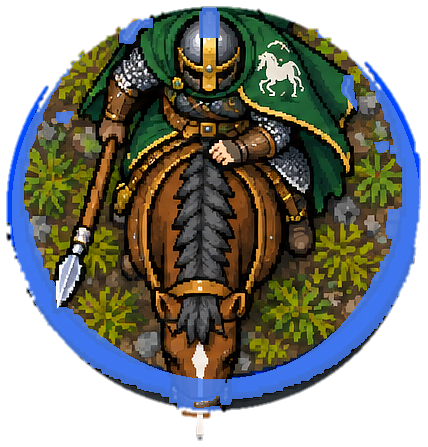
rohan_rider
로한 기병
rohan · cavalry · spear · XL
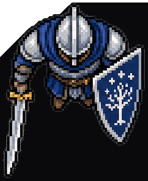
mt_swordshield
미나스 티리스 검방
gondor · infantry · sword_shield · M
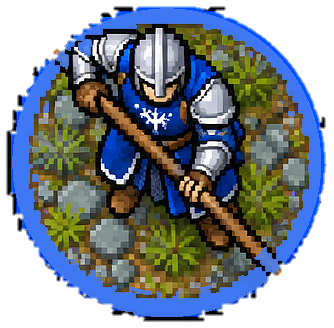
mt_spear
미나스 티리스 창병
gondor · infantry · spear · M
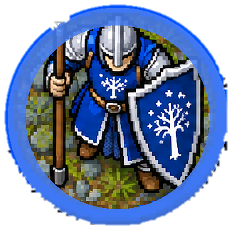
mt_spearshield
미나스 티리스 창방
gondor · infantry · spear_shield · M
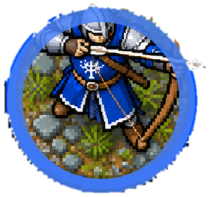
mt_bowman
미나스 티리스 궁수
gondor · infantry · bow · M
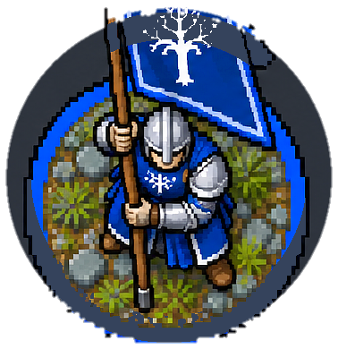
mt_banner
미나스 티리스 기수
gondor · support · banner · M
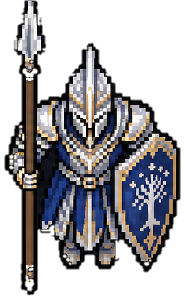
mt_fountain_guard
샘물수위병
gondor · infantry · spear_shield · M
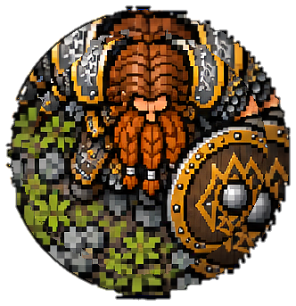
dwarf_axeshield
드워프 도끼방
dwarf · infantry · axe · M
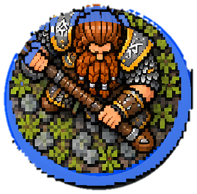
dwarf_2haxe
드워프 양손도끼
dwarf · infantry · twohanded · M
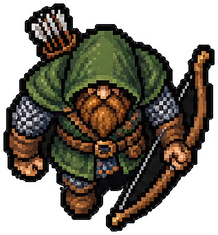
dwarf_ranger
드워프 레인저
dwarf · infantry · bow · M
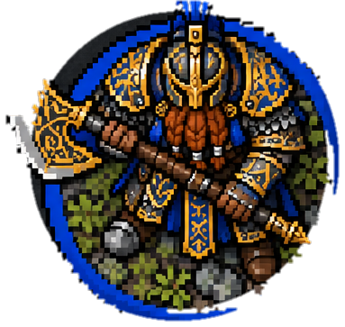
khazad_guard
카자드 근위병
dwarf · infantry · axe · M
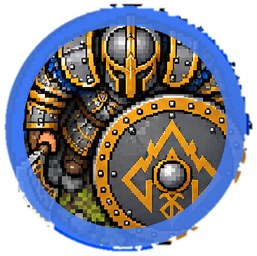
iron_guard
아이언 가드
dwarf · infantry · sword_shield · M
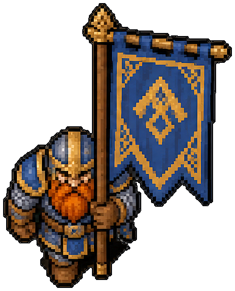
dwarf_banner
드워프 기수
dwarf · support · banner · M
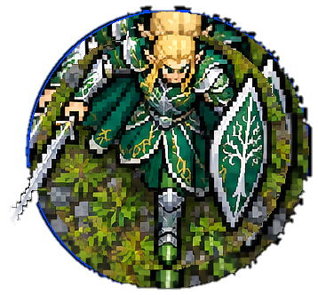
elf_swordshield
엘프 검방
elf · infantry · sword_shield · M
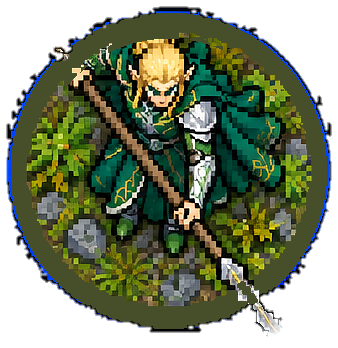
elf_spear
엘프 창병
elf · infantry · spear · M
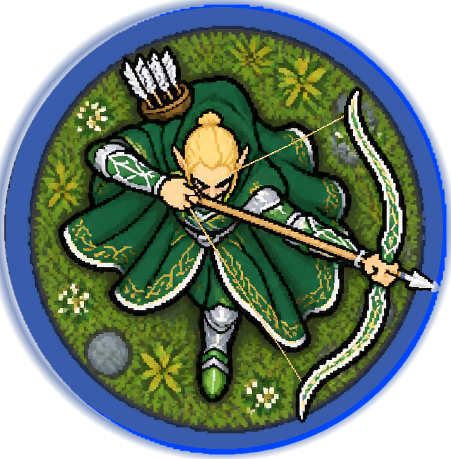
elf_bow
엘프 궁수
elf · infantry · bow · M
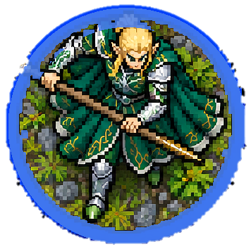
elf_glaive
엘프 글레이브
elf · infantry · twohanded · M
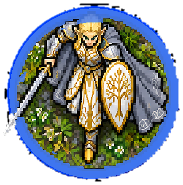
galadhrim_warrior
갈라드림 전사
lothlorien · infantry · sword · M
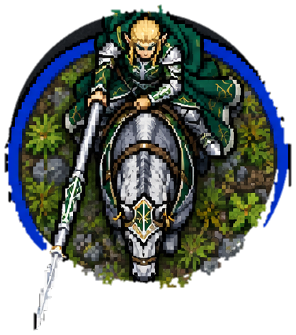
elf_knight
엘프 기마기사
rivendell · cavalry · lance · XL
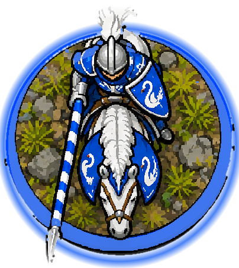
dol_amroth_knight
돌 암로스 백조기사
gondor · cavalry · lance · XL
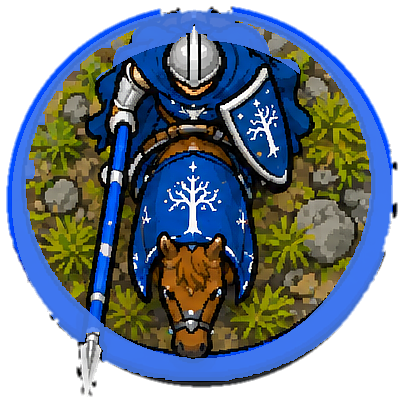
gondor_knight
곤도르 기병
gondor · cavalry · lance · XL
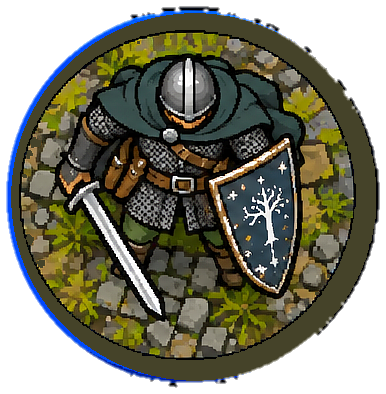
osgiliath_veteran
오스길리아스 베테랑
gondor · infantry · sword_shield · M
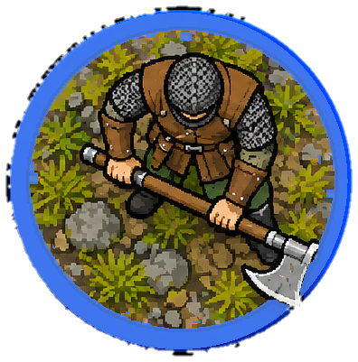
lossarnach_axeman
로사르나흐 도끼병
gondor · infantry · twohanded · M
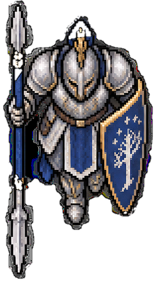
citadel_guard
성채근위병
gondor · infantry · spear_shield · M
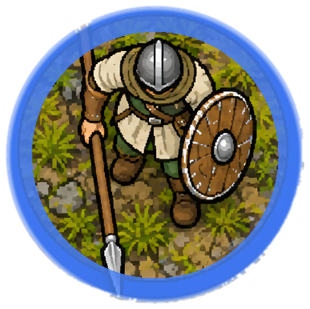
pelennor_militia
펠렌노르 민병
gondor · infantry · spear · M
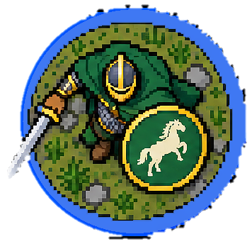
rohan_swordshield
로한 검방
rohan · infantry · sword_shield · M
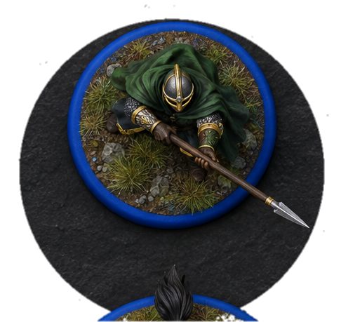
rohan_spear
로한 창병
rohan · infantry · spear · M
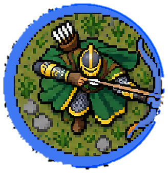
rohan_archer
로한 궁수
rohan · infantry · bow · M
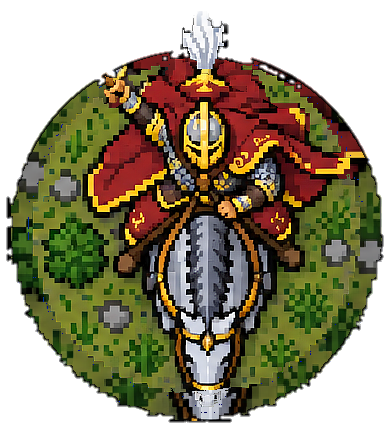
eomer
에오메르(기마)
rohan · hero · sword · XL
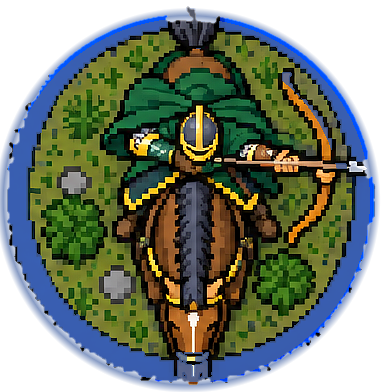
rohan_outrider
로한 기마궁수
rohan · cavalry · bow · XL
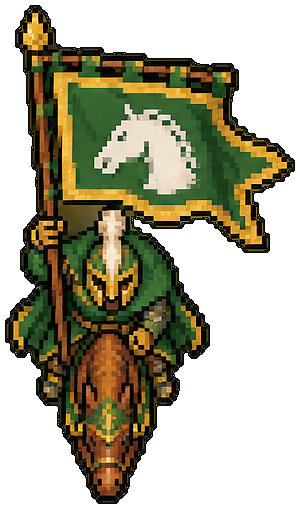
rohan_banner
로한 기수
rohan · support · banner · M
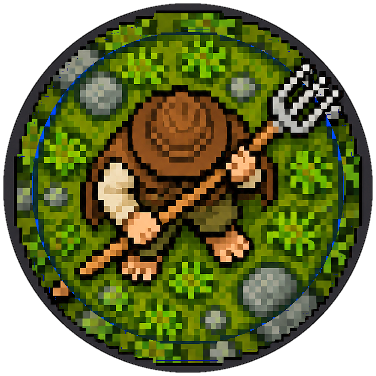
hobbit_shirriff
호빗 민병
shire · infantry · pitchfork · S
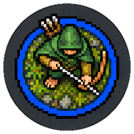
hobbit_bounder
호빗 궁수
shire · infantry · bow · S
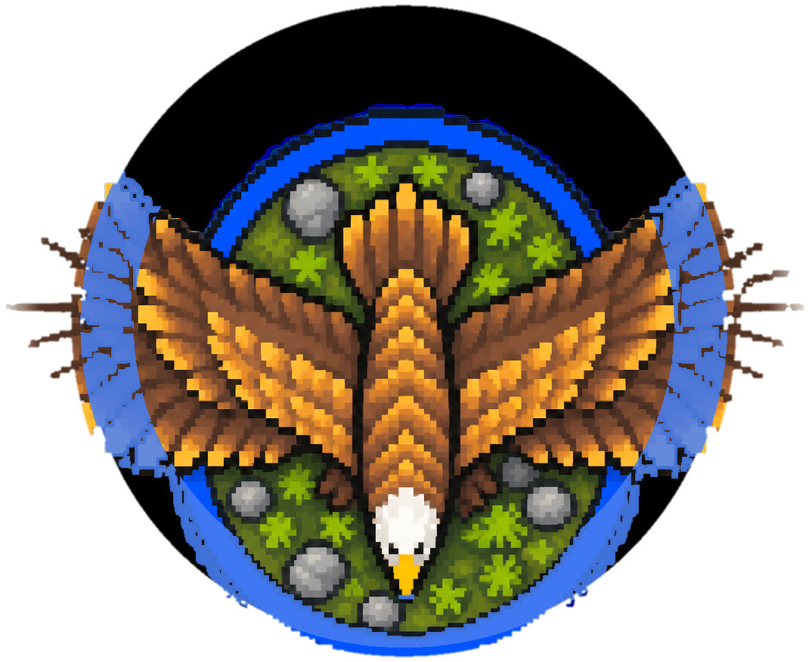
great_eagle
대독수리
eagle · monster · none · XL
ent
엔트
ent · monster · none · XXL
beorning
베오르닝 전사
beorning · hero · axe · L
ranger_north
북부 레인저
arnor · infantry · sword · M
theoden
세오덴(기마)
rohan · cavalry · sword_shield · XL
faramir
파라미르
gondor · hero · bow · M
haldir
할디르
lothlorien · hero · twohanded · M
galadriel
갈라드리엘
lothlorien · hero · none · M
gamling
감링(기수)
rohan · hero · banner · M
samwise
샘와이즈
shire · hero · dagger · S
witchking_foot
마술왕(도보)
angmar · hero · sword · L
orc_sword
모르도르 오크(검)
mordor · infantry · sword · S
cave_troll
동굴 트롤
moria · monster · club · XXL
witchking_fellbeast
마술왕(펠비스트)
angmar · monster · sword · XXL
witchking_mounted
마술왕(기마)
angmar · cavalry · sword · XL
witchking_mounted_sheet
마술왕(기마·예비)
angmar · cavalry · sword · XL
witchking_foot_mace
마술왕(철퇴)
angmar · hero · mace · L
nazgul_sword
나즈굴(검)
angmar · hero · sword · L
saruman
사루만
isengard · hero · staff · L
orc_shaman
오크 주술사
moria · support · staff · S
orc_captain
오크 대장
mordor · hero · sword · M
orc_spearman
오크 창병
mordor · infantry · spear · S
orc_archer
오크 궁수
mordor · infantry · bow · S
uruk_swordshield
우르크하이 검방
isengard · infantry · sword_shield · M
morannon_orc
모라논 오크
mordor · infantry · spear_shield · M
warg_rider
와르그 기병
mordor · cavalry · spear · XL
haradrim_spearman
하라드림 창병
harad · infantry · spear · M
balrog
발록
moria · monster · various · XXL
mountain_troll
산악 트롤
mordor · monster · club · XXL
shelob
셀로브
mordor · monster · various · XXL
barrow_wight
고분 망령
angmar · hero · sword · M
moria_goblin
모리아 고블린
moria · infantry · sword · S
uruk_berserker
우르크 광전사
isengard · infantry · twohanded · M
sauron
사우론
mordor · hero · mace · XXL
nazgul_sword_2
나즈굴(검·B)
angmar · hero · sword · L
nazgul_mace
나즈굴(철퇴)
angmar · hero · mace · L
nazgul_mounted
나즈굴(기마)
angmar · cavalry · sword · XL
morgul_knight
모르굴 기사
mordor · cavalry · lance · XL
dwimmerlaik
드위머레이크(갑옷 나즈굴)
angmar · hero · mace · L
orc_sword2
오크(검)
mordor · infantry · sword · S
orc_swordshield
오크(검방)
mordor · infantry · sword_shield · S
orc_spear2
오크(창)
mordor · infantry · spear · S
orc_twohanded
오크(양손도끼)
mordor · infantry · twohanded · S
orc_bow
오크(활)
mordor · infantry · bow · S
orc_drummer
오크 전쟁북
mordor · support · drum · S
uruk_swordshield2
우르크하이 검방
isengard · infantry · sword_shield · M
uruk_pike
우르크하이 파이크
isengard · infantry · pike · M
uruk_crossbow
우르크하이 석궁
isengard · infantry · crossbow · M
uruk_scout
우르크하이 스카웃
isengard · infantry · sword · M
uruk_berserker2
우르크하이 광전사
isengard · infantry · twohanded · M
uruk_banner
우르크하이 기수
isengard · support · banner · M
haradrim_spear
하라드림 창병
harad · infantry · spear · M
haradrim_bow
하라드림 궁수
harad · infantry · bow · M
haradrim_priest
하라드림 전사제
harad · support · staff · M
easterling_phalanx
이스터링 방진병
easterling · infantry · pike · M
easterling_swordshield
이스터링 검방
easterling · infantry · sword_shield · M
easterling_kataphrakt
이스터링 중기병
easterling · cavalry · lance · XL
black_numenorean
검은 누메노르인(도보)
mordor · infantry · sword_shield · M
black_numenorean_mounted
검은 누메노르인(기마)
mordor · cavalry · lance · XL
orc_tracker
오크 추적자
mordor · infantry · twohanded · S
war_troll
전쟁 트롤
mordor · monster · club · XXL
black_guard
바라드두르 흑근위
mordor · infantry · spear_shield · M
orc_taskmaster
오크 두목
mordor · support · whip · M
goblin_spear
고블린 창병
moria · infantry · spear · S
goblin_shield
고블린 방패병
moria · infantry · sword_shield · S
goblin_bow
고블린 궁수
moria · infantry · bow · S
goblin_prowler
고블린 프라울러
moria · infantry · dagger · S
goblin_king
고블린 왕
moria · hero · club · L
goblin_shaman
고블린 샤먼
moria · support · staff · S
dunlending_warrior
던랜딩 전사
dunland · infantry · sword · M
dunlending_huscarl
던랜딩 허스칼
dunland · infantry · twohanded · M
warg
야생 와르그
isengard · monster · none · M
uruk_sapper
우르크 폭파반
isengard · infantry · bomb · M
uruk_scout_archer
우르크 스카웃 궁수
isengard · infantry · bow · M
crebain_swarm
크레반 까마귀 떼
isengard · support · none · M
mouth_of_sauron
사우론의 입(기마)
mordor · cavalry · sword · XL
gothmog
고스모그
mordor · hero · mace · L
lurtz
루르츠
isengard · hero · bow · M
sharku
샤르쿠(와르그)
isengard · cavalry · spear · XL
grima
그리마 웜텅
isengard · hero · dagger · M
khamul
카물
angmar · hero · mace · L
terr_rock_outcrop
바위 지형
terrain · terrain · none · L
terr_standing_stones
입석
terrain · terrain · none · L
terr_pine_copse
소나무 숲
terrain · terrain · none · L
terr_oak_tree
참나무
terrain · terrain · none · XL
terr_dead_tree
고목
terrain · terrain · none · L
terr_hedgerow
울타리 덤불
terrain · terrain · none · L
terr_ruined_wall
무너진 성벽
terrain · terrain · none · XL
terr_ruined_tower
폐탑
terrain · terrain · none · XL
terr_gondor_house
곤도르 가옥
terrain · terrain · none · XL
terr_rohan_hall
로한 회관
terrain · terrain · none · XL
terr_orc_camp
오크 야영지
terrain · terrain · none · XL
terr_barrow
고분
terrain · terrain · none · XL